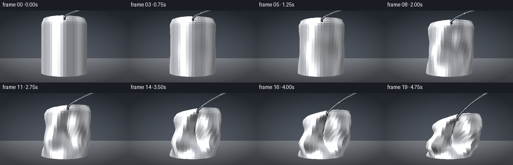
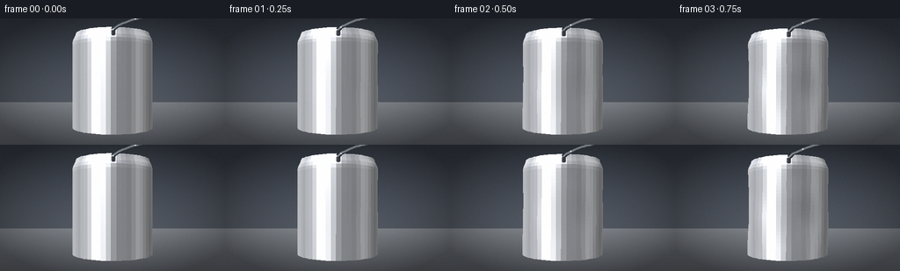

CODING AGENTS AS PIXEL WORLD MODELS
traex/Seed-2.1-Pro-0915 · phygen_019
点击播放 · 原生 RGB 像素
逐轮保存的候选
回放视频、检查图与代码变化。
每份候选均可单独播放。实际图片检查记录在下方工具轨迹中。
候选 01播放与检查图
点击播放 · 原生 RGB 像素


展开代码变化
--- 上一保存版本
+++ 本次保存版本
@@ -0,0 +1,321 @@
+"""Procedural timelapse: air is pumped out of a sealed thin aluminium can.
+
+The can is a cylindrical mesh deformed by a fixed buckling field whose
+magnitude grows over time (atmospheric crush). Faces are shaded from their
+deformed normals with a simple metallic lighting model and painted back to
+front. Everything is rendered at 2x and downsampled for smooth edges.
+"""
+import json
+import math
+import shutil
+from pathlib import Path
+
+import numpy as np
+from PIL import Image, ImageDraw
+
+import artifact_io
+
+CASE_DIR = Path(__file__).parent
+SPEC = json.loads((CASE_DIR / "task_spec.json").read_text())
+W, H = SPEC["width"], SPEC["height"]
+N_FRAMES, FPS = SPEC["frames"], SPEC["fps"]
+SS = 2 # supersampling factor
+W2, H2 = W * SS, H * SS
+
+# ---- scene constants -------------------------------------------------------
+R_CAN = 1.0
+H_CAN = 2.35
+N_SEG = 56
+N_LEV = 30
+CAM = np.array([0.0, 1.35, 6.9])
+TARGET_Y = 1.15
+FOCAL = 620.0
+YAW = 0.42
+
+rng = np.random.default_rng(7)
+
+
+def smoothstep(x):
+ x = np.clip(x, 0.0, 1.0)
+ return x * x * (3 - 2 * x)
+
+
+def gauss(x, mu, sigma):
+ return np.exp(-0.5 * ((x - mu) / sigma) ** 2)
+
+
+def ang_gauss(th, mu, sigma):
+ d = (th - mu + math.pi) % (2 * math.pi) - math.pi
+ return np.exp(-0.5 * (d / sigma) ** 2)
+
+
+def build_mesh(p):
+ """Return deformed vertex grids X,Y,Z, each (N_LEV+1, N_SEG+1)."""
+ th = np.linspace(0, 2 * math.pi, N_SEG + 1)
+ v = np.linspace(0, 1, N_LEV + 1)
+ TH, VV = np.meshgrid(th, v)
+
+ # Necked-in top rim of a real can.
+ neck = 1.0 - 0.085 * smoothstep((VV - 0.90) / 0.10)
+ rad = R_CAN * neck
+
+ # Fixed buckling field: vertical fold lines + horizontal crease bands +
+ # one dominant side dent. Scaled monotonically by crush progress p.
+ dent = (
+ 0.55 * np.cos(3 * TH + 0.7) * np.sin(math.pi * VV) ** 0.9
+ + 0.40 * np.cos(4 * TH - 1.3) * np.sin(math.pi * VV) ** 1.3
+ + 0.55 * gauss(VV, 0.34, 0.12) * np.cos(3 * TH + 2.1)
+ + 0.45 * gauss(VV, 0.63, 0.10) * np.cos(2 * TH - 0.5)
+ + 0.80 * gauss(VV, 0.50, 0.26) * ang_gauss(TH, 2.45, 0.85)
+ + 0.14 * np.cos(8 * TH + 0.3) * np.sin(2 * math.pi * VV)
+ )
+ # Base ring stays seated on the table; buckling acts above it.
+ vertical_weight = 0.25 + 0.75 * np.sin(math.pi * VV) ** 0.6
+ indent = np.clip(p * 0.60 * dent * vertical_weight, -0.25, 0.72)
+ rad = rad * (1.0 - indent)
+
+ h_scale = 1.0 - 0.34 * p
+ Y = VV * H_CAN * h_scale
+ # Top tilts and wobbles as the structure fails.
+ tilt = 0.17 * p
+ X = rad * np.cos(TH) + tilt * H_CAN * VV ** 2
+ Z = rad * np.sin(TH)
+ Y = Y + p * 0.10 * H_CAN * np.sin(TH + 0.4) * VV ** 3
+ Z = Z + 0.10 * p * H_CAN * VV ** 2 * np.cos(TH - 0.2)
+ return X, Y, Z, TH
+
+
+def mesh_normals(X, Y, Z):
+ dTh = [np.gradient(A, axis=1) for A in (X, Y, Z)]
+ dV = [np.gradient(A, axis=0) for A in (X, Y, Z)]
+ nx = dV[1] * dTh[2] - dV[2] * dTh[1]
+ ny = dV[2] * dTh[0] - dV[0] * dTh[2]
+ nz = dV[0] * dTh[1] - dV[1] * dTh[0]
+ norm = np.maximum(np.sqrt(nx ** 2 + ny ** 2 + nz ** 2), 1e-9)
+ return nx / norm, ny / norm, nz / norm
+
+
+def rotate_yaw(P):
+ c, s = math.cos(YAW), math.sin(YAW)
+ x, y, z = P[..., 0], P[..., 1], P[..., 2]
+ return np.stack([x * c + z * s, y, -x * s + z * c], axis=-1)
+
+
+def project(points):
+ """points (...,3) world -> screen pixels at supersampled resolution."""
+ x, y, z = points[..., 0], points[..., 1], points[..., 2]
+ zc = CAM[2] - z
+ xc = x - CAM[0]
+ sx = W2 / 2 + FOCAL * xc / zc
+ sy = H2 / 2 - FOCAL * (y - TARGET_Y) / zc
+ return np.stack([sx, sy, zc], axis=-1)
+
+
+LIGHT_DIR = np.array([-0.45, 0.80, 0.55])
+LIGHT_DIR = LIGHT_DIR / np.linalg.norm(LIGHT_DIR)
+BASE_GREY = np.array([196.0, 199.0, 205.0])
+
+
+def shade(normal, center, theta_col):
+ """Metallic shading from a face normal and position."""
+ n = normal / np.maximum(np.linalg.norm(normal), 1e-9)
+ view = CAM - center
+ view = view / np.linalg.norm(view)
+ diff = max(0.0, float(np.dot(n, LIGHT_DIR)))
+ half = LIGHT_DIR + view
+ half = half / np.linalg.norm(half)
+ spec = max(0.0, float(np.dot(n, half))) ** 26 * 0.85
+ # Fake environment: soft vertical reflection stripes + fresnel rim.
+ stripe = (
+ 0.55 * math.exp(-((n[0] + 0.30) ** 2) / 0.055)
+ + 0.30 * math.exp(-((n[0] - 0.62) ** 2) / 0.05)
+ )
+ fres = (1 - max(0.0, float(np.dot(n, view)))) ** 2 * 0.35
+ brushed = 0.965 + 0.035 * math.sin(theta_col * 37.0)
+ val = (0.32 + 0.78 * diff) * brushed
+ col = BASE_GREY * val + 255.0 * spec + 205.0 * stripe + 185.0 * fres
+ return tuple(int(np.clip(c, 0, 255)) for c in col)
+
+
+def make_background():
+ yy, xx = np.mgrid[0:H2, 0:W2]
+ horizon = H2 * 0.66
+ top = np.array([54.0, 60.0, 70.0])
+ wall_lo = np.array([86.0, 92.0, 102.0])
+ tab_hi = np.array([132.0, 136.0, 142.0])
+ tab_lo = np.array([96.0, 100.0, 107.0])
+ tw = np.clip(yy / horizon, 0, 1)[..., None]
+ wall = top * (1 - tw) + wall_lo * tw
+ tf = np.clip((yy - horizon) / (H2 - horizon), 0, 1)[..., None]
+ table = tab_hi * (1 - tf) + tab_lo * tf
+ arr = np.where(yy[..., None] < horizon, wall, table)
+ r2 = ((xx - W2 / 2) / (W2 / 2)) ** 2 + ((yy - H2 / 2) / (H2 / 2)) ** 2
+ vign = np.clip(1.0 - 0.28 * r2, 0.6, 1.0)
+ arr = (arr * vign[..., None]).clip(0, 255).astype(np.uint8)
+ return Image.fromarray(arr)
+
+
+def draw_soft_shadow(img, base_proj, crush):
+ layer = Image.new("RGBA", (W2, H2), (0, 0, 0, 0))
+ d = ImageDraw.Draw(layer)
+ cx = float(np.mean(base_proj[:, 0]))
+ cy = float(np.mean(base_proj[:, 1]))
+ rx = (np.max(base_proj[:, 0]) - np.min(base_proj[:, 0])) * 0.55 * (1 + 0.25 * crush)
+ ry = max(5.0, rx * 0.22)
+ for k in range(7):
+ grow = 1.0 + 0.22 * k
+ alpha = int(26 * (1 - k / 7))
+ d.ellipse(
+ [cx - rx * grow, cy - ry * grow, cx + rx * grow, cy + ry * grow],
+ fill=(10, 12, 16, alpha),
+ )
+ img.paste(Image.alpha_composite(img.convert("RGBA"), layer).convert("RGB"), (0, 0))
+
+
+def render_frame(i):
+ t = i / (N_FRAMES - 1)
+ p = t ** 1.65 # slow start, forceful finish
+ X, Y, Z, TH = build_mesh(p)
+ nx, ny, nz = mesh_normals(X, Y, Z)
+
+ P = np.stack([X, Y, Z], axis=-1)
+ Pw = rotate_yaw(P)
+ Nw = rotate_yaw(np.stack([nx, ny, nz], axis=-1))
+ S = project(Pw)
+
+ img = make_background()
+ draw_soft_shadow(img, S[0], p)
+ draw = ImageDraw.Draw(img)
+ faces = []
+
+ # Side quads.
+ for j in range(N_LEV):
+ for k in range(N_SEG):
+ corners = [(j, k), (j, k + 1), (j + 1, k + 1), (j + 1, k)]
+ pts = [tuple(S[a, b][:2]) for a, b in corners]
+ depth = float(np.mean([S[a, b, 2] for a, b in corners]))
+ ctr = np.mean([Pw[a, b] for a, b in corners], axis=0)
+ nrm = np.mean([Nw[a, b] for a, b in corners], axis=0)
+ theta_mid = float(np.mean([TH[a, b] for a, b in corners]))
+ faces.append((depth, pts, ctr, nrm, theta_mid))
+
+ # Top cap: rim annulus + disk fan.
+ top = N_LEV
+ center_w = np.mean(Pw[top], axis=0)
+ center_s = project(center_w[None, :])[0]
+ inner_w = []
+ for k in range(N_SEG + 1):
+ ring = Pw[top, k].copy()
+ ring[1] += 0.018
+ ring[0] *= 0.80
+ ring[2] *= 0.80
+ inner_w.append(ring)
+ inner_w = np.array(inner_w)
+ inner_s = project(inner_w)
+ for k in range(N_SEG):
+ pts = [tuple(S[top, k][:2]), tuple(S[top, k + 1][:2]),
+ tuple(inner_s[k + 1][:2]), tuple(inner_s[k][:2])]
+ depth = float(np.mean([S[top, k, 2], S[top, k + 1, 2],
+ inner_s[k + 1, 2], inner_s[k, 2]]))
+ faces.append((depth, pts, center_w + np.array([0, 0.02, 0]),
+ np.array([0.0, 1.0, 0.0]), 0.0))
+ pts = [tuple(center_s[:2]), tuple(inner_s[k][:2]),
+ tuple(inner_s[k + 1][:2])]
+ faces.append((depth - 0.01, pts, center_w,
+ np.array([0.0, 1.0, 0.0]), 0.0))
+
+ # Bottom cap (keeps the mesh closed).
+ bot_center = project(np.mean(Pw[0], axis=0)[None, :])[0]
+ for k in range(N_SEG):
+ pts = [tuple(bot_center[:2]), tuple(S[0, k + 1][:2]),
+ tuple(S[0, k][:2])]
+ faces.append((float(np.mean(S[0, :, 2])) - 0.02, pts,
+ np.mean(Pw[0], axis=0),
+ np.array([0.0, -1.0, 0.0]), 0.0))
+
+ faces.sort(key=lambda f: -f[0])
+ for depth, pts, ctr, nrm, theta_mid in faces:
+ col = shade(nrm, ctr, theta_mid)
+ draw.polygon(pts, fill=col)
+
+ # Nozzle + vacuum hose anchored at the deformed top.
+ _draw_hose(draw, center_s[:2], i)
+
+ # Fine film grain.
+ arr = np.asarray(img).astype(np.int16)
+ noise = rng.integers(-3, 4, size=arr.shape, dtype=np.int16)
+ arr = np.clip(arr + noise, 0, 255).astype(np.uint8)
+ img = Image.fromarray(arr).resize((W, H), Image.LANCZOS)
+ return np.asarray(img), S
+
+
+def _draw_hose(draw, anchor, frame_i):
+ ax, ay = anchor
+ nw, nh = 9.0, 11.0
+ draw.rounded_rectangle(
+ [ax - nw / 2, ay - nh, ax + nw / 2, ay + 2],
+ radius=3, fill=(52, 56, 63), outline=(120, 125, 133), width=1,
+ )
+ draw.line([ax - nw / 2 + 2, ay - nh + 2, ax - nw / 2 + 2, ay],
+ fill=(108, 113, 122), width=1)
+
+ # Curved hose running up and right, off the top edge.
+ p0 = np.array([ax, ay - nh])
+ p1 = np.array([ax + 16, ay - 34])
+ p2 = np.array([W2 * 0.78, -26.0])
+ p3 = np.array([W2 + 24, -46.0])
+
+ def bez(t):
+ mt = 1 - t
+ return (mt ** 3 * p0 + 3 * mt ** 2 * t * p1
+ + 3 * mt * t ** 2 * p2 + t ** 3 * p3)
+
+ steps = 40
+ path = [bez(s / steps) for s in range(steps + 1)]
+ for width, color in ((10.0, (38, 42, 48)), (6.2, (88, 94, 102)),
+ (2.0, (150, 156, 164))):
+ draw.line([tuple(q) for q in path], fill=color,
+ width=int(width), joint="curve")
+
+ # Faint specks travelling toward the pump, suggesting evacuated air.
+ for k in range(3):
+ tt = (frame_i * 0.085 + k * 0.34) % 1.0
+ q = bez(tt)
+ r = 1.6
+ draw.ellipse([q[0] - r, q[1] - r, q[0] + r, q[1] + r],
+ fill=(206, 214, 222))
+
+
+def main():
+ frames = []
+ print("frame p bbox(x0,y0,x1,y1) at 2x")
+ for i in range(N_FRAMES):
+ frame, S = render_frame(i)
+ frames.append(frame)
+ t = i / (N_FRAMES - 1)
+ p = t ** 1.65
+ x0, y0 = S[..., 0].min(), S[..., 1].min()
+ x1, y1 = S[..., 0].max(), S[..., 1].max()
+ print(f"{i:5d} {p:.3f} ({x0:6.1f},{y0:6.1f},{x1:6.1f},{y1:6.1f})")
+ frames = np.stack(frames).astype(np.uint8)
+
+ # Keep a backup of any previous candidate before overwriting.
+ for name in ("pixels.npz", "frames", "inspection.png", "index.html",
+ "transition_check.png"):
+ target = CASE_DIR / name
+ if target.exists():
+ backup = CASE_DIR / ".tmp" / f"prev_{name}"
+ if target.is_dir():
+ if backup.exists():
+ shutil.rmtree(backup)
+ shutil.copytree(target, backup)
+ else:
+ backup.parent.mkdir(parents=True, exist_ok=True)
+ shutil.copy2(target, backup)
+
+ artifact_io.save(frames, CASE_DIR)
+ print("saved", frames.shape)
+
+
+if __name__ == "__main__":
+ main()
可观测工具轨迹
实际执行的命令与返回图片。
命令 1exit 0
/bin/bash -lc 'cat prompt.txt GENERATION_RULES.md task_spec.json'
命令 2exit 0
/bin/bash -lc 'ls -la && find . -maxdepth 2 -type f | head -50'
命令 3exit 0
/bin/bash -lc 'cat artifact_io.py'
命令 4exit 0
/bin/bash -lc 'cd . && python generate.py'
保存候选 1 份；完成命令 4 次；可验证图片返回 0 张。原始 API 响应与完整日志保留在本地。